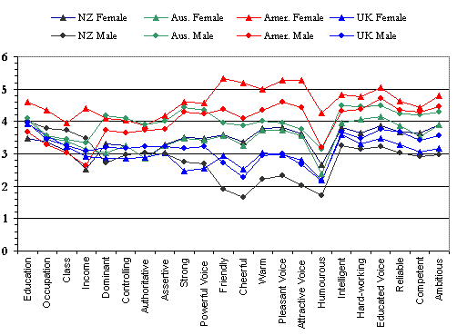

Evaluating English Accents WorldWide Results: MALAYSIA
Malaysian Personality Trait Means
54 Students of
44 female, 10 male; mean age 26.8
(collected by Harshita Haroon & Alias Ghani)

Malaysian Students' Accent Guesses Majority/plurality percentage
for each speaker in boldface; Major erroneous guesses
italicised
Points to Note:
The two General Northern American (USA) voices were the only two voices identified by more than 20% of the sample, with the female voice being recognised by approximately half.
While other samples have struggled to identify the Australian and New Zealand voices, this is only the second sample (after Brazil) to not be familiar with the UK accent.
There is very little variation in the evaluation of speakers on power, status, and competence, with the American and Australian voices being viewed slightly more positively. The UK male also sees some favourable evaluation on these traits.
The USA voices (especially the female) are rated highest in solidarity, with the New Zealand male and the two UK voices particularly disliked.
Created by: Owen Baxter,
Content: James Green,
Modified: 14 November 2003